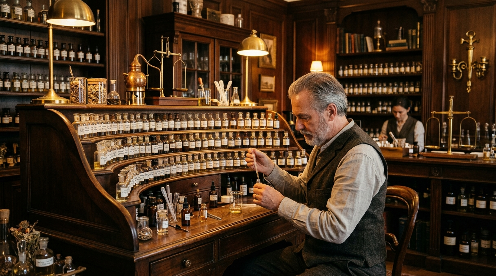

Maison Éclat ra đời từ niềm đam mê thuần khiết dành cho nghệ thuật điều hương — một nghề thủ công tinh tế đòi hỏi kiến thức sâu rộng về hàng ngàn nguyên liệu thiên nhiên, sự nhạy cảm nghệ thuật hiếm có, và lòng kiên nhẫn của nhiều năm tháng.
Được thành lập tại Việt Nam vào năm 2018, Maison Éclat mang theo truyền thống điều hương từ Grasse — thủ phủ nước hoa thế giới tại miền nam nước Pháp. Mỗi mùi hương trong bộ sưu tập của chúng tôi đều được sáng tạo theo phương pháp thủ công truyền thống, không sử dụng hương tổng hợp rẻ tiền hay quy trình sản xuất công nghiệp đại trà.

Chúng tôi tuyển chọn trực tiếp từ những vùng nguyên liệu danh tiếng nhất thế giới. Hoa hồng Centifolia được hái bằng tay tại Grasse mỗi sáng sớm tháng Năm, khi hàm lượng tinh dầu đạt đỉnh. Trầm hương cổ thụ từ rừng Khánh Hòa được ủ tối thiểu 20 năm. Đàn hương Mysore thu hoạch có kiểm soát theo tiêu chuẩn bảo tồn quốc tế. Bơ iris Florence được chiết xuất từ rễ cây iris được phơi khô và ủ trong 3 năm.
Mỗi mẻ nguyên liệu đều được kiểm định chất lượng và xác nhận nguồn gốc trước khi đưa vào xưởng điều hương. Chúng tôi cam kết 100% nguyên liệu thiên nhiên, không pha trộn tổng hợp, và minh bạch về thành phần trong mỗi chai nước hoa.
Một mùi hương Maison Éclat trải qua hành trình sáng tạo kéo dài 12 đến 18 tháng. Bắt đầu từ ý tưởng cảm xúc — một khoảnh khắc, một vùng đất, một ký ức — nghệ nhân điều hương thực hiện hơn 300 lần thử nghiệm hòa trộn trước khi chốt công thức cuối cùng.
Sau đó, nước hoa được ủ trong tối thiểu 6 tuần trong điều kiện kiểm soát nhiệt độ và ánh sáng, cho phép các phân tử hương hòa quyện hoàn hảo và phát triển chiều sâu.
Nguyên liệu thuần tự nhiên từ những vùng trồng danh tiếng nhất thế giới. Không hương tổng hợp.
Mỗi chai nước hoa được sáng tạo và đóng gói thủ công tại xưởng, với sự chăm chút từng chi tiết nhỏ nhất.
Thành phần công khai, nguồn gốc truy xuất được, bao bì tái chế và cam kết bảo tồn thiên nhiên.